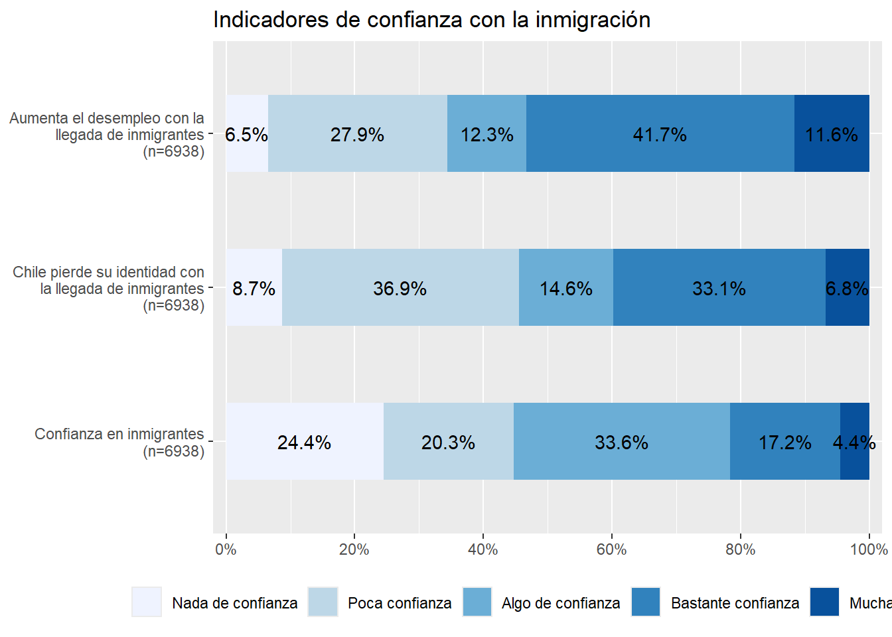
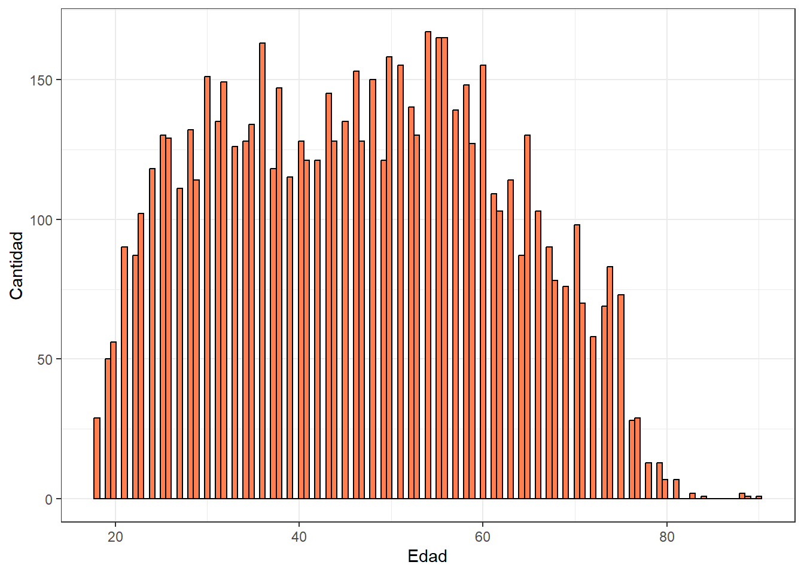
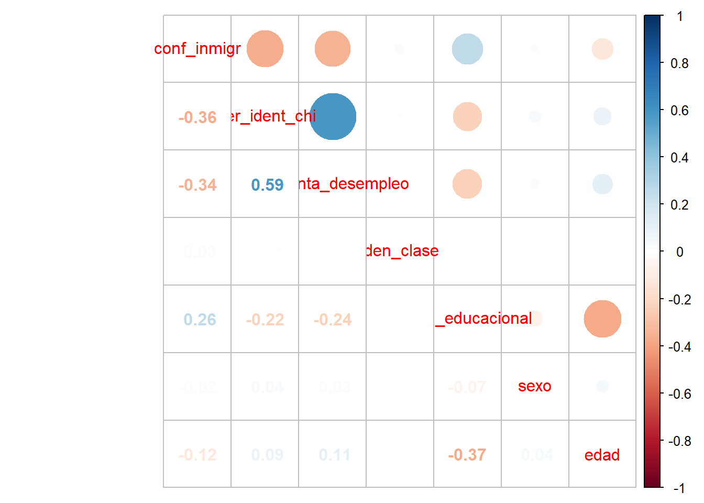

pacman::p_load(haven,
texreg,
dplyr,
sjmisc,
car,
sjlabelled,
stargazer,
haven,
sjPlot,
ggplot2,
psych,
kableExtra,
corrplot)Percepciónes e imaginarios de la migración ante inmigrantes de nacionalidad peruana, haitiana y venezolana a Chile
“Percepciónes e imaginarios de la migración ante inmigrantes de nacionalidad peruana, haitiana y venezolana a Chile” Carpeta practico-github
Introducción:
En los últimos años ha crecido exponencialmente la llegada de inmigrantes a nuestro país, desde diferentes países de América Latina, y a partir de la Pandemia covid-19, la ola migratoria tomo más fuerza y comenzó a sobreponerse como una problemática a nivel nacional. Frente a este nuevo fenómeno migratorio, es necesario pensar, ¿Cómo los chilenos abordan, y observan la llegada de migrantes al país? Pensando en los inmigrantes de nacionalidades Peruana, Haitiana y Venezolana que han llegado a nuestro país. Los estudios respecto a la migración internacional en Chile han sido abordados desde diferentes perspectivas, siendo el racismo, la discriminación, y el rol del Estado, las principales líneas de investigación (Mahara Sleiman Mora 2023). Haciendo un recorrido bibliográfico nos encontramos con preguntas acerca de los inmigrantes que van desde: sí deberían mantener sus costumbres; si aportan con sus costumbres al país; o si son un aporte a la economía nacional. Estas son algunas de las perspectivas que se abordan en investigaciones; centros de estudio acerca del conflicto y la cohesión social como el COES, tienen módulos que apuntan a recopilar información acerca de las opiniones que tienen los chilenos acerca de este fenómeno. Para los objetivos de este trabajo analizaremos variables que apuntan a considerar los valores de confianza en la inmigración, grados de acuerdo diferentes afirmaciones en contra de la migración. Codificando estas como indicadores de medición de la percepción y los perjuicios en torno al tema. El objetivo es analizar cuál es el grado de acuerdo con afirmaciones que reproducen discursivas en contra del fenómeno migratorio en el país, como “Chile pierde su identidad con la llegada de inmigrantes”, y “Aumenta el desempleo con la llegada de inmigrantes al país”, y a partir de ello analizar ¿cuál es perfil que reproduce estas narrativas, es decir, quienes son y cómo se expresan los ciudadanos sobre la inmigración? Para contextualizar, las oleadas de inmigrantes no son un fenómeno nuevo en Chile, ya que, en décadas anteriores han existido antecedentes sobre oleadas migratorias desde Perú, Bolivia, Haití, y Venezuela. Algunas cifras indican que, el oleaje de migrantes que han arribado a nuestro país en los últimos años ha ido en un aumento exponencial; existiendo en las cifras datos que son relevantes en cuanto a las migraciones en el eje sur-sur. Que se abordan desde Bolivia, Colombia, Ecuador, Perú, Haití, y Venezuela, siendo estos últimos el caso central de mi propuesta. Solo durante el año 2021 hubo un total de 56.586 ingresos irregulares, la cifra más alta de ingresos por pasos no habilitados registrada en Chile durante los últimos diez años (Estrella Aguilar Guerra, Franco Villalobos Ceballos, and Romina Ramos Rodríguez 2023). Por lo que es necesario indagar como estos cambios sociodemográficos impactan en la visión que se tiene acerca de la migración. En 2020 se agudizó la crisis migratoria desde Venezuela, según datos consultados al Servicio Nacional de Migraciones (SERMIG) existió un aumento en las Residencias Definitivas (RD) otorgadas a personas venezolanas (que pasaron de 14.827 en 2021 a 66.771 en 2022). Siendo este un reflejo del aumento de personas provenientes desde Venezuela, teniendo como último destino nuestro país: según datos consultados en el Reporte 2021-2022 del Servicio Nacional de Migraciones. A raíz de este aumento, considero existe un fenómeno nuevo muy poco estudiado hasta ahora que es la percepción que se tiene en Chile de los migrantes Latinoamericanos en particular. El estudio del COES nos permite estudiar cómo se comportan las relaciones e interacciones entre estos; pensando la realidad en torno a los perjuicios y discursos de odio difundidos en redes sociales, y expresadas en medios de comunicación hacía personas de nacionalidad venezolana, peruana y haitiana que residen en nuestro país. Este debate público remite a discursos difundidos en redes sociales que divulgan “el Estado le quitará la casa a nacionales para entregárselas a familias migrantes que se encuentran sin hogar” o “qué personas migrantes tienen más acceso a servicios del Estado que no-migrantes”. Por lo cual, hacer una revisión de la percepción de los migrantes que se tiene en Chile; contribuye a esclarecer si esta es una percepción negativa en cuanto a los chilenos, dado el aumento de la migración sur-sur y las diferencias culturales acontecidas en los últimos años. (Juan Carlos Rodríguez Torrent and Rodrigo Vargas Callegari 2023). El aumento sostenido de los discursos de odio, y la xenofobia han sido la tónica de los últimos meses en los medios de comunicación. La prensa en términos generales contribuye a generar una percepción negativa hacía los inmigrantes ante las diferencias culturales, étnico y raciales, entre quienes llegan al país y quienes son residentes. La posible llegada que tengan los medios de comunicación con sectores más conservadores de la sociedad, que tienen relación con estos discursos que fomentan la discriminación y segregación de la población migrante en el país, influiría en una creciente percepción negativa que tienen las personas con respecto a los inmigrantes (Nairbis Desirée Sibrian Díaz, Neida Josefina Colmenares Mejías, and Juan Carlos Núñez Silva 2023). Esta percepción negativa está ligada a la interiorización de discursos xenófobos, y racistas que se encuentran en el imaginario colectivo de nuestro país, en el artículo “el otro migrante negro y nosotros el chileno” de la Socióloga María Tijoux extrae fragmentos de entrevistas en las que se indica la percepción fragmentada que se tiene hacía migrantes racializados, mal llamados “negros”. Existe una caricaturización y exageración de los otros, con la cual se menosprecia, denigra y sexualiza (en el caso de las mujeres) y al otro como sujeto migrante frente al ciudadano nacional. Una mirada que para la autora tiene su raíz en la propia historia de nuestro país, en la que la negritud es invisibilidad desde la colonia, y en la cual “el chileno” se percibe así mismo como “blanco”. Sin duda, esta autopercepción influye en la configuración de la realidad nacional actual, en la cual no solo se esparcen discursos negativos: racistas y xenófobos hacia la migración, sino más bien estos se apuntan hacia las migraciones latinoamericanas, racializadas, pobres, y feminizadas. Lo que expresaría es una realidad compartida de cuan tolerantes somos como país frente a un otro, que es ajeno, y diferente a lo que consideramos somos nosotros mismos y nuestra identidad nacional.
Cargar paquetes
Cargar base de datos
load("C:/Users/hp/Desktop/Rstudio/practico-1/elsoc2016.rdata")Visualización de resultados
sjmisc::descr(proc_data,
show = c("label","range", "mean", "sd", "NA.prc", "n"))%>%
kable(.,"markdown")| var | label | n | NA.prc | mean | sd | range | |
|---|---|---|---|---|---|---|---|
| 2 | conf_inmigr | Confianza en inmigrantes | 6938 | 0 | 1.5688959 | 1.1599466 | 4 (0-4) |
| 6 | pier_ident_chi | Chile pierde su identidad con la llegada de inmigrantes | 6938 | 0 | 1.9228884 | 1.1449474 | 4 (0-4) |
| 1 | aumenta_desempleo | Aumenta el desempleo con la llegada de inmigrantes | 6938 | 0 | 2.2398386 | 1.1665975 | 4 (0-4) |
| 4 | iden_clase | Identificación con clase social subjetiva | 6938 | 0 | 2.9469588 | 0.7643190 | 4 (0-4) |
| 5 | nivel_educacional | Nivel educacional | 6938 | 0 | 2.1683482 | 0.7743332 | 3 (1-4) |
| 7 | sexo | Sexo | 6938 | 0 | 0.6049294 | 0.4889011 | 1 (0-1) |
| 3 | edad | Edad | 6938 | 0 | 46.6223696 | 15.3566537 | 72 (18-90) |
referencia tabla 1: Table 1.
En la tabla anterior podemos observar las variables que se utilizaran para esta investigación, estas son 1)confianza en inmigrantes (conf_inmigr), 2) Chile pierde su identidad con la llegada de inmigrantes (pier_ident_chi), 3) aumenta el desempleo con la llegada de inmigrantes (aumenta_desempleo), 4) identificación con la clase social subjetiva” (iden_clase), 5) nivel educacional (nivel_educacional), 6) sexo y 7) edad. En esta ocasión decidimos eliminar los casos perdidos debido a que las variables no se encontraban en todas las olas que ha realizado ELSOC desde 2016 a 2022, por lo que trabajaremos con 6.938 casos,y un 100% de los valores validos para las variables seleccionadas anteriormente. Las variables 1,2,3, y 4 han sido recodificadas en valores entre 0 y 4 en ellas se expresan 1. grados de confianza, 2. grados de acuerdo con las afirmaciones de las variables 2, 3 y 4; y nivel educacional contempla valors desde 1 educación básica, hasta 4 educación superior y/o postgrado. Algunos datos relevantes de las variables de medición son las siguientes:
Variable confianza en los inmigrantes: al menos un 34% de los encuestados declara tener algo de confianza en la migración, mientras que solo un 5% declara tener bastante confianza. En la variable Chile pierde su identidad existe una distribución binaria de las respuestas, porque un 37% declara no estar de acuerdo con la afirmación, mientras que un 33% declara estar de acuerdo con que Chile pierde su identidad con la llegada de inmigrantes. Por lo que existe una opinión dividida entre quienes fueron encuestados. En cuanto a la variable 3, aumenta el desempleo con la llegada de inmigrantes el caso es diferente, ya que un 53% de los encuestados afirma estar de acuerdo o totalmente de acuerdo con la afirmación de que aumenta el desempleo con la llegada de inmigrantes al país.
Operacionalización de variables
El proceso de operacionalización de variables esta bajo tres premisas iniciales de investigación, i) confianza en la inmigración, ii) perjuicios asociados a los migrantes, iii) datos sociodemograficos. En este caso utilizamos información proveniente de Metodologías de la Investigación Social de Manuel Canales Ceron. Donde haremos uso del siguiente esquema: fase teorica y fase empirica, la primera cuenta con la introducción del concepto a medir, que puede contener una dimensión simple, que asegura un entendimiento general de las variables por parte de la población, como variables sociodemograficas de edad y sexo. Y una dimensión compleja, que estaría asociada a la construcción teorica y empirica de los conceptos, a partir de estas dos fases, donde para permitir el entendimiento de la profundidad teorica de los mismos se aplica una división en sub conceptos, preguntas e indices que nos permitan medir más directamente esta complejidad.
Confianza en la inmigración: las asociaciones existentes entre la confianza y las actitudes hacía la migración, así como entre diferentes niveles de perjuicios hacia la inmigración y la confianza hacía otros, es que debe producir algún tipo de asociación en el sentido de que pueda existir la tendencia de que los individuos con menor grado de acuerdo hacía los perjuicios presenten una mayor confianza que se mediria en mayor aceptación frente a la población extranjera (manuelgarciaferrando?).
Perjuicios asociados a los migrantes: para el segundo apartado utilizamos la construcción de indices a partir de un concepto complejo, como lo es “perjuicios”, en este apartado consideramos las variables “Chile pierde su identidad con la llegada de inmigrantes”, y “Aumenta el desempleo con la llegada de inmigrantes”.
Datos Sociodemograficos: estos datos estan asociados a variables demograficas, conceptos simples en la dimensión operacional, que refieren a datos sociodemograficos, como “edad”, “sexo”, “nivel educacional”, “clase social”, a partir de la base de datos del SOC2916 utilizamos las variables edad, sexo, nivel educaciónal e identificación de la clase social subjetiva de los encuestados.
La recodificación de variables y las preguntas de investigación, Los valores de las variables 1, 2 y 3, están de 0 a 4, siendo 0 nada de confianza, y 4 bastante confianza; 2 y 3 con valores de 0 a 4, que indican los grados de acuerdo con la afirmación.
Graficos univariados
graph2 <- sjPlot::plot_stackfrq(dplyr::select(proc_data, conf_inmigr,
pier_ident_chi,
aumenta_desempleo),
title = "Indicadores de confianza con la inmigración") +
theme(legend.position="bottom")
graph2
graph4 <- ggplot(proc_data, aes(x = as.numeric(edad))) +
geom_histogram(binwidth=0.6, colour="black", fill="coral") +
theme_bw() +
xlab("Edad") +
ylab("Cantidad")
graph4
Estimacion de correlaciones
proc_datacor <- proc_data %>% select(conf_inmigr, pier_ident_chi, aumenta_desempleo, iden_clase, nivel_educacional, sexo, edad)%>%
mutate_all(~(as.numeric(.)))
sjmisc::descr(proc_datacor,
show = c("label","range", "mean", "sd", "NA.prc", "n")) %>%
kable(.,"markdown")| var | label | n | NA.prc | mean | sd | range | |
|---|---|---|---|---|---|---|---|
| 2 | conf_inmigr | conf_inmigr | 6938 | 0 | 1.5688959 | 1.1599466 | 4 (0-4) |
| 6 | pier_ident_chi | pier_ident_chi | 6938 | 0 | 1.9228884 | 1.1449474 | 4 (0-4) |
| 1 | aumenta_desempleo | aumenta_desempleo | 6938 | 0 | 2.2398386 | 1.1665975 | 4 (0-4) |
| 4 | iden_clase | iden_clase | 6938 | 0 | 2.9469588 | 0.7643190 | 4 (0-4) |
| 5 | nivel_educacional | nivel_educacional | 6938 | 0 | 2.1683482 | 0.7743332 | 3 (1-4) |
| 7 | sexo | sexo | 6938 | 0 | 0.6049294 | 0.4889011 | 1 (0-1) |
| 3 | edad | edad | 6938 | 0 | 46.6223696 | 15.3566537 | 72 (18-90) |
M <- cor(proc_datacor, use = "complete.obs")
M conf_inmigr pier_ident_chi aumenta_desempleo iden_clase
conf_inmigr 1.00000000 -0.361194550 -0.342666858 2.574802e-02
pier_ident_chi -0.36119455 1.000000000 0.588764253 -8.627981e-03
aumenta_desempleo -0.34266686 0.588764253 1.000000000 -4.322991e-03
iden_clase 0.02574802 -0.008627981 -0.004322991 1.000000e+00
nivel_educacional 0.25671703 -0.223073505 -0.235721127 -1.165546e-05
sexo -0.01999413 0.039565639 0.029924635 1.779964e-03
edad -0.12392758 0.085356631 0.111697439 -1.961136e-04
nivel_educacional sexo edad
conf_inmigr 2.567170e-01 -0.019994129 -0.1239275812
pier_ident_chi -2.230735e-01 0.039565639 0.0853566314
aumenta_desempleo -2.357211e-01 0.029924635 0.1116974388
iden_clase -1.165546e-05 0.001779964 -0.0001961136
nivel_educacional 1.000000e+00 -0.069134308 -0.3706181164
sexo -6.913431e-02 1.000000000 0.0403192471
edad -3.706181e-01 0.040319247 1.0000000000sjPlot::tab_corr(proc_datacor,
triangle = "lower")| conf_inmigr | pier_ident_chi | aumenta_desempleo | iden_clase | nivel_educacional | sexo | edad | |
| conf_inmigr | |||||||
| pier_ident_chi | -0.361*** | ||||||
| aumenta_desempleo | -0.343*** | 0.589*** | |||||
| iden_clase | 0.026* | -0.009 | -0.004 | ||||
| nivel_educacional | 0.257*** | -0.223*** | -0.236*** | -0.000 | |||
| sexo | -0.020 | 0.040*** | 0.030* | 0.002 | -0.069*** | ||
| edad | -0.124*** | 0.085*** | 0.112*** | -0.000 | -0.371*** | 0.040*** | |
| Computed correlation used pearson-method with listwise-deletion. | |||||||
sjPlot::tab_corr(proc_datacor,
na.deletion = "pairwise", # espeficicamos tratamiento NA
triangle = "lower")| conf_inmigr | pier_ident_chi | aumenta_desempleo | iden_clase | nivel_educacional | sexo | edad | |
| conf_inmigr | |||||||
| pier_ident_chi | -0.361*** | ||||||
| aumenta_desempleo | -0.343*** | 0.589*** | |||||
| iden_clase | 0.026* | -0.009 | -0.004 | ||||
| nivel_educacional | 0.257*** | -0.223*** | -0.236*** | -0.000 | |||
| sexo | -0.020 | 0.040*** | 0.030* | 0.002 | -0.069*** | ||
| edad | -0.124*** | 0.085*** | 0.112*** | -0.000 | -0.371*** | 0.040*** | |
| Computed correlation used pearson-method with pairwise-deletion. | |||||||
corrplot.mixed(M)
Estimación de modelos de regresión
proc_datacor <- proc_datacor %>%
rowwise() %>%
mutate(prejuicio = sum(pier_ident_chi, aumenta_desempleo))
fit01<- lm(prejuicio~iden_clase,data=proc_datacor)
fit02<- lm(prejuicio~nivel_educacional ,data=proc_datacor)
fit03<- lm(prejuicio~sexo,data=proc_datacor)
fit04<- lm(prejuicio~edad,data=proc_datacor)
fit05<- lm(prejuicio~nivel_educacional+iden_clase,data=proc_datacor)
fit06<- lm(prejuicio~sexo+edad,data=proc_datacor)
knitreg(list(fit01, fit02,fit03, fit04, fit05, fit06))| Model 1 | Model 2 | Model 3 | Model 4 | Model 5 | Model 6 | |
|---|---|---|---|---|---|---|
| (Intercept) | 4.22*** | 5.65*** | 4.06*** | 3.47*** | 5.71*** | 3.39*** |
| (0.10) | (0.07) | (0.04) | (0.08) | (0.12) | (0.08) | |
| iden_clase | -0.02 | -0.02 | ||||
| (0.03) | (0.03) | |||||
| nivel_educacional | -0.68*** | -0.68*** | ||||
| (0.03) | (0.03) | |||||
| sexo | 0.16** | 0.15** | ||||
| (0.05) | (0.05) | |||||
| edad | 0.01*** | 0.01*** | ||||
| (0.00) | (0.00) | |||||
| R2 | 0.00 | 0.07 | 0.00 | 0.01 | 0.07 | 0.01 |
| Adj. R2 | -0.00 | 0.07 | 0.00 | 0.01 | 0.07 | 0.01 |
| Num. obs. | 6938 | 6938 | 6938 | 6938 | 6938 | 6938 |
| ***p < 0.001; **p < 0.01; *p < 0.05 | ||||||
Conclusiones Finales
Conclusiones preliminares del trabajo: Es posible plantear a través de la bibliografía consultada que los discursos de odio radican en la otredad, pensarnos como superiores, moral y políticamente deja al otro en un puesto de jerarquización hacia abajo, en el cual no es observado como igual, sino como un otro ajeno, extraño, o inferior a nosotros. Esto tendería a fomentar una percepción negativa de la llegada de migrantes venezolanos a Chile. Sin tomar en consideración los beneficios que esto podría conllevar para el país, como por ejemplo el aumento de trabajadores en edad laboral, o trabajadores en puestos de trabajo que ya no quieren ser tomados por los mismos nacionales, aumento de la natalidad, diversificación cultural. A raíz de algunas conversaciones en cátedra del curso migraciones: desde una mirada interseccional comentan que el aumento de la percepción negativa hacía los migrantes en Chile tiene su fundamento en visones sesgados y promovidas por medios de comunicación que apuntan a señalar a los problemas estructurales de nuestro país, como problemas que suceden principalmente por la llegada de nuevos migrantes. Ejemplo de esto es, aumento en la delincuencia, aumento en los niveles de inseguridad en las calles, disminución de ofertas laborales, entre algunas. Dado esto, considero que los discursos de odio hacia personas de nacionalidad principalmente venezolana serían utilizados como una suerte de chivo expiatorio en nuestro país, hacia problemas de carácter estructural como «aumento del desempleo», «la crisis en seguridad», «la crisis de vivienda», «acceso a la salud pública», y «acceso a la educación pública». Si bien una investigación más amplia podría abordar todos estos fenómenos y las percepciones que tienen tanto ciudadanos locales como ciudadanos extranjeros en el país. En este caso nos limitaremos a hacer una investigación a partir de una revisión de 2 indicadores de percepción de perjuicios presentes en la población encuestada.
References
Estrella Aguilar Guerra, Franco Villalobos Ceballos, and Romina Ramos Rodríguez. 2023. “Migración Venezolana En El Norte de Chile: El Caso de La Infancia Migrante No Acompañada.” Simbiótica 10 (1): 37–67. https://doi.org/10.47456/simbitica.v10i1.40866.
Juan Carlos Rodríguez Torrent, and Rodrigo Vargas Callegari. 2023. “Migración Al Chile Neoliberal: Ciudadanía, Arraigo y Autonomía.” Política, Globalidad y Ciudadanía 9 (18): 135–54. https://doi.org/10.29105/pgc9.18-8.
Mahara Sleiman Mora. 2023. “Trayectorias Migratorias Transnacionales En El Contexto de La Migración Sur-Sur En La Ciudad de Temuco, Chile.” Revista Temas Sociológicos, no. 31 (January): 293–324. https://doi.org/10.29344/07196458.31.2766.
Nairbis Desirée Sibrian Díaz, Neida Josefina Colmenares Mejías, and Juan Carlos Núñez Silva. 2023. “Estrategias Desinformativas Sobre Migración En Chile: Encuadre de Noticias Falsas Respecto a La Movilidad Humana.” Migraciones. Publicación Del Instituto Universitario de Estudios Sobre Migraciones, September. https://doi.org/10.14422/mig.2023.021.